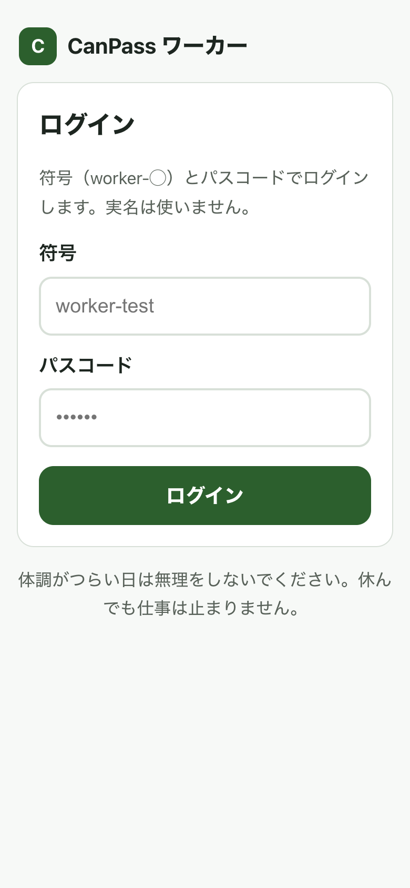
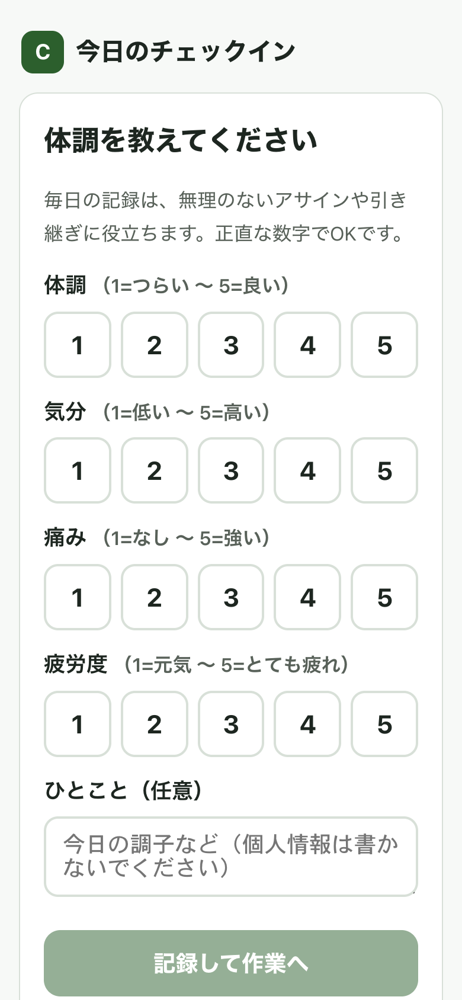
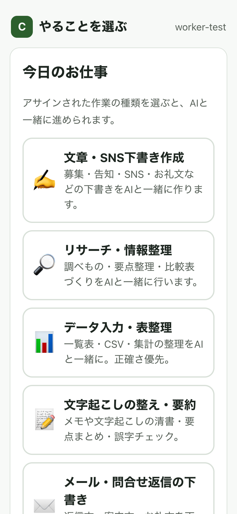
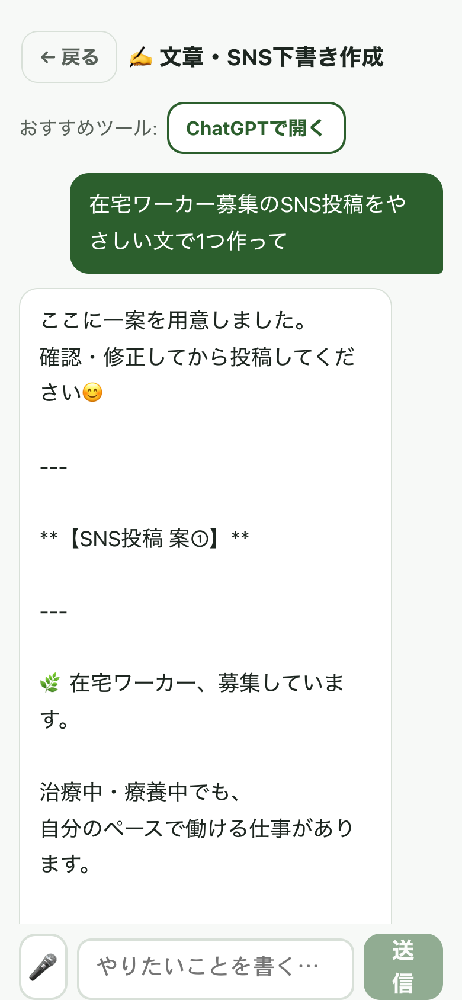

スマホのカメラでQRを読み取るか、下のURLを開いてください。
worker-app-sooty.vercel.appworker-testcanpass 体験用※ これは体験用のデモです。実際の業務では一人ひとり専用の符号・パスコードを発行します。

「符号」に worker-test、「パスコード」に canpass を入れて〔ログイン〕を押します。
実名は使いません。符号（worker-◯）で管理するので安心です。

体調・気分・痛み・疲労度を 1〜5 で選びます。正直な数字でOKです。

割り当てられた作業の種類をタップします。デモでは6種類から選べます。

「やりたいこと」をふだんの言葉で書いて〔送信〕。AIが下書きや整理を返します。会話を続けて仕上げましょう。
共有ボタン → 「ホーム画面に追加」 → 〔追加〕。アイコンから一発で開けます。
右上のメニュー ⋮ → 「ホーム画面に追加」→ 〔追加〕。